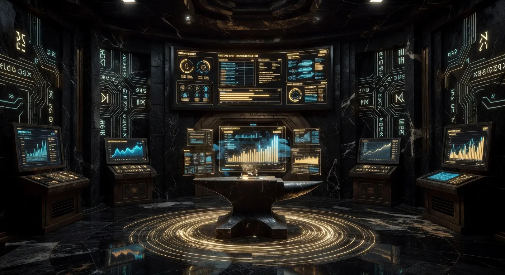

The LiveGuard Dashboard
The same unified dashboard, extended with a LIVEGUARD section, 7 real-time tabs driven by WebSocket hub events.
forge_liveguard_run composite results displayed since v2.30.
Opening the Dashboard
The LiveGuard section is part of the unified Plan Forge dashboard, no separate app or port required:
node pforge-mcp/server.mjsOpen localhost:3100/dashboard. The LIVEGUARD section appears in the tab bar after a visual divider, separated from the FORGE section.
Two Sections, One Dashboard
The tab bar uses a two-section layout:
FORGE tabs use a blue active indicator. LIVEGUARD tabs use amber, you always know which half of the dashboard you're in.
Health Tab
The Health tab shows aggregate project health powered by forge_health_trend. Key widgets:
- Health Score, a single 0–100 number, color-coded: green (80+), amber (50–79), red (<50). Computed from drift, incidents, cost, and model performance.
- Drift Trend, 30-day line chart of architecture drift scores. The x-axis is time; the y-axis is score 0–100.
- MTTBF, Mean Time Between Failures, calculated from incident timestamps. Lower is worse.
- Cost Trend, monthly aggregated cost from
forge_cost_report.
The Health tab auto-refreshes on every liveguard-tool-completed WebSocket event. No manual refresh needed.
Incidents Tab
Live list of open incidents from .forge/incidents.jsonl. Each card shows:
- Incident ID, unique identifier
- Severity badge, color-coded: red (critical), orange (high), yellow (medium), grey (low)
- MTTR, time elapsed since the incident was captured, updated in real-time
- On-call, engineer name from
.forge.jsononCallconfig - Affected files, file list, clickable to view in editor
Fix Proposals Feed (v2.29), when forge_fix_proposal has generated plans, a Proposed Fixes section appears at the top of the Incidents tab. Each entry shows the proposal file path, source type (regression/drift/incident/secret), and a Run in Assisted Mode → button that opens the Actions tab pre-filled with the plan path. The feed reads from GET /api/fix/proposals on tab load and on every fix-proposal-ready hub event.
Triage Tab
Displays the output of forge_alert_triage, a ranked list of all open alerts sorted by priority (severity × recency). Each row shows:
- Source, which tool generated the alert (drift, regression, dep-watch, etc.)
- Severity, badge matching the severity matrix in Appendix F
- Priority score, computed rank (higher = address first)
- Description, one-line summary
- Timestamp, when the alert was generated
Critical and high alerts show a red/amber left-border on their row. The tab badge shows the total number of unresolved critical+high alerts.
Security Tab
Surfaces results from forge_secret_scan. Shows:
- Scan status, clean (green shield) or findings (red shield with count)
- Findings list, file path, line number, type (api_key, token, etc.), entropy score, confidence level. Values are never shown, only
<REDACTED>placeholders. - Last scan time, from cache file
- Run Scan button, triggers
POST /api/secrets/scan
The Security tab reads from .forge/secret-scan-cache.json on load and refreshes on liveguard-tool-completed events where tool === "forge_secret_scan".
Env Tab
Key-by-key comparison of all .env.* files in the project root, powered by forge_env_diff.
- Key matrix, rows are env keys, columns are files. Present keys show a ✓; missing keys show a ✗.
- Gap count, total missing keys, highlighted in the tab badge
- Values are never displayed, the Env tab shows key names only
- Run Diff button, triggers
POST /api/env/diff
The tab reads from .forge/env-diff-cache.json on load. Cache is refreshed when forge_env_diff completes.
Quorum Analysis from the Dashboard (v2.29)
The Health and Incidents tabs each include a Run Quorum Analysis → link. Clicking it calls GET /api/quorum/prompt?source=<tab-source>&goal=risk-assess and opens a pre-populated quorum prompt in the Actions tab, ready to copy into your AI client. No model calls happen from the dashboard, it assembles the prompt for you.
Help Links from the Dashboard
Each LiveGuard tab header includes a Docs ↗ link. Clicking it opens this chapter in a new tab, you never lose your live dashboard session. The section header also has a Docs link pointing to this page's overview.